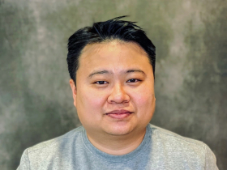
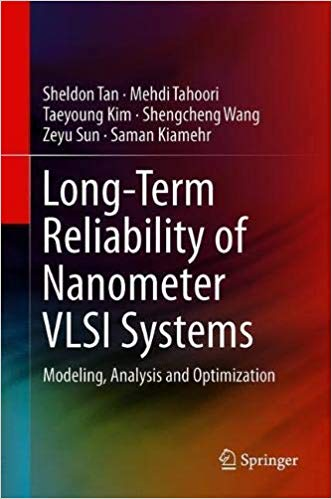

Dr. Taeyoung Kim (김태영;金泰永)

Biographical Sketch
Dr. Kim is an AI systems architect with 20+ years of engineering and research experience across silicon power/thermal modeling, EDA tooling, and production AI platforms, and a Ph.D. in Computer Science (Systems & Architecture). As a Staff AI Software Architect at Intel, he serves as Technical Lead and Security Architect Lead for Intel SuperClaw (V1.0–V2.0), Intel's open-source local AI agent reference tool, and led a 50-person client/cloud engineering organization for Intel AI Assistant Builder (V1.0–V2.9, Hybrid AI), shipping on-device GenAI releases to 10 AI PC OEM customers. His work spans LLM evaluation and cross-runtime benchmarking infrastructure (30 models across 10 silicon SKUs, 3× faster release validation), client power and thermal workload characterization, AI-assisted overclocking (Intel Core 14th Gen), and silicon power/thermal/DRAM modeling. He holds 8 patents (1 granted, 7 published), has authored 35 peer-reviewed research papers and a Springer book, and has received 8 Intel Divisional Recognition Awards (2023–2026).
He has received the M.S. degree in electrical engineering
from University of
Virginia, Charlottesville, VA, USA in 2012, and the
Ph.D. degree in computer science
from University of California,
Riverside, CA, USA in 2017. His dissertation was titled
"System-level
Electromigration-Induced Dynamic Reliability
Management." During his Ph.D. study, he received a
best research award at ACM Ph.D. Forum at Design Automation
Conference (DAC) in 2015 and a dissertation award from the
University of California in 2017.
Selected Publications
-
Books
-

Order at
Amazon
S. Tan, M. Tahoori, T. Kim, S. Wang, Z. Sun, and
S. Kiamehr, "Long-Term Reliability of Nanometer VLSI
Systems: Modeling, Analysis and Optimization," 1st
ed. Springer International Publishing, 2019
This book provides readers with a detailed reference
regarding two of the most important long-term reliability
and aging effects on nanometer integrated systems,
electromigrations (EM) for interconnect and biased
temperature instability (BTI) for CMOS devices. Dr. Kim has
been focusing on machine learning-based dynamic resource
management algorithm and this book includes his full doctoral research.
-
Journals/Conferences
- T. Kim, S. X.-D. Tan, C. Cook, and Z. Sun, “Detection of
counterfeited ICs via on-chip sensor and post-fabrication
authentication policy,” Integration, the VLSI Journal, vol. 63,
pp. 31–40, Sep. 2018.
- T. Kim, Z. Liu, and S. X.-D. Tan, “Dynamic reliability
management based on resource-based EM modeling for multi-core
microprocessors,” Microelectronics Journal, vol. 74,
pp. 106-115, Apr. 2018.
- T. Kim, Z. Sun, H. Chen, H. Wang, S. X-D. Tan, “Energy and
Lifetime Optimizations for Dark Silicon Manycore Microprocessor
Considering both Hard and Soft Errors,” in IEEE Transactions on
Very Large Scale Integration Systems (TVLSI), vol. 25, no. 9,
pp. 2561-2574, Sept. 2017
- T. Kim, Z. Sun, C. Cook, J. Gaddipati, H. Wang, H. Chen,
S. X.-D. Tan, “Dynamic Reliability Management for Near-Threshold
Dark Silicon Processors”, Proc. IEEE/ACM International
Conference on Computer-Aided Design (ICCAD), Austin, TX,
Nov. 2016
- T. Kim, Z. Sun, C. Cook, H. Zhao, R. Li, D.Wong,
S. X.-D. Tan, “Cross-layer modeling and optimization for
electromigration-induced reliability”, Proc. IEEE/ACM Design
Automation Conference (DAC), Austin, TX, Jun. 2016
- T. Kim, X. Huang, H. Chen, V. Sukharev, S. X.-D. Tan,
“Learning-based Dynamic Reliability Management for Dark Silicon
Processor Considering EM Effects”, Proc. Design, Automation and
Test in Europe (DATE), Dresden, Germany, Mar. 2016
-
Theses
- T. Kim, “System-Level Electromigration-Induced Dynamic
Reliability Management,”, Doctoral Dissertation, University of California, 2017
- T. Kim, “Detection and Prevention of Forward Head
Posture with Body Sensor Networks,” Master's Thesis, University of Virginia,
2012
-
Complete list
Patents
- Methods and apparatus to adapt memory channel usage on a per-user basis, US12430060B2 (Granted Sep. 30, 2025; pub. US20220188016A1)
- Methods and apparatus to perform cloud-based artificial intelligence overclocking, US20230418622A1 (Published Dec. 28, 2023)
- Optimized group-wise quantized matmul on neural network accelerator, WO2026157017A1 (Published Jul. 30, 2026)
- Optimized rotary positional embedding on neural network accelerator, WO2026157016A1 (Published Jul. 30, 2026)
- Methods and apparatus for personalized generative artificial intelligence (GenAI) assistant, WO2026157015A1 (Published Jul. 30, 2026)
- Systems, methods, and apparatus for autotuning of retrieval augmented generation parameters, WO2026157014A1 (Published Jul. 30, 2026)
- Methods and apparatus for document parsing for retrieval-augmented generation, WO2026157013A1 (Published Jul. 30, 2026)
- Methods and apparatus for end-to-end enterprise-based generative artificial intelligence (GenAI), WO2026157012A1 (Published Jul. 30, 2026)
Professional Activities
- [2023-Present], Forum Chair, Intel Data Science Center of Excellence
- [2022-Present], Forum Chair, Intel Weekly AI Forum
- [2017-Present] Associate Editor, Integration, the VLSI Journal, ELSEVIER
- [2023-Present], Technical Program Committee (TPC), AI/ML Track, Design, Automation and Test in Europe Conference (DATE)
- [2024] System Track, Technical Program Committee (TPC), ACM/IEEE International Symposium on Low Power Electronics and Design (ISLPED)
- [2024] Low-power, energy-efficient and thermal-aware design, Technical Program Committee (TPC), Design, Automation and Test in Europe Conference (DATE)
- [2024] AI Track, Technical Program Committee (TPC), Design Automation Conference (DAC)
- [2023] System Track, Technical Program Committee (TPC), ACM/IEEE International Symposium on Low Power Electronics and Design (ISLPED)
- [2023] AI Track, Technical Program Committee (TPC), Design Automation Conference (DAC)
- [2022] AI Track, Technical Program Committee (TPC), Design Automation Conference (DAC)
- [2022] System Track, Technical Program Committee (TPC), ACM/IEEE International Symposium on Low Power Electronics and Design (ISLPED)
- [2022] Special Session Chair, Asian and South Pacific Design Automation Conference (ASP-DAC)
- [2021] System Track, Technical Program Committee (TPC), ACM/IEEE International Symposium on Low Power Electronics and Design (ISLPED)
- [2021-Present] Program Committee, Young Excellence (WYE) Program at IEEE Solid-State Circuits Society, IEEE
- [2020-2022] Standard Committee, IEEE P1924.1 Standard Working Group, Energy Efficient Comm Hardware, IEEE
- [2017-2018] Program Committee, ACM Student Research Competition at International Conference On Computer Aided Design (ICCAD)
- [2019-Present] Reviewer, IEEE Transactions on Computer-Aided Design of Integrated Circuits and Systems (TCAD)
- [2018-Present] Reviewer, Microelectronics Journal, ELSEVIER
- [2018-Present] Reviewer, Microelectronics Reliability Journal, ELSEVIER
- [2018-Present] Reviewer, ACM Journal on Emerging Technologies in Computing Systems (JETC)
- [2017-Present] Reviewer, ACM Transactions on Embedded Computing Systems (TECS)
- [2016-Present] Reviewer, ACM Transactions on Design Automation of Electronic Systems (TODAES)
- [2015-Present] Reviewer, IEEE Transactions On Very Large Scale Integration (VLSI) Systems (TVLSI)
Awards
- [2026/Q2] Agentic AI product launch with key AI PC customers, Divisional Recognition Award (DRA), PC Ecosystem Division, Intel
- [2026/Q1] Intel AI Super Builder Project Hybrid AI, Divisional Recognition Award (DRA), PC Ecosystem Division, Intel
- [2025/Q2] Intel AI Assistant Builder Project Release V1.2, Divisional Recognition Award (DRA), PC Ecosystem Division, Intel Corporation
- [2025/Q2] Building the 1st SOC thermal-aware floorplanner, Divisional Recognition Award (DRA), Intelligent Systems Research, Intel Corporation
- [2025/Q1] Intel AI Assistant Builder Project Release V1.1, Divisional Recognition Award (DRA), Client Ecosystem Division, Intel Corporation
- [2024/Q4] Intel AI Assistant Builder Project Release V1.0, Divisional Recognition Award (DRA), Client Ecosystem Division, Intel Corporation
- [2023/Q4] AI-assist Overclocking Product Release, Divisional Recognition Award (DRA), Client Ecosystem Division, Intel Corporation
- [2023/Q4] AI-assist Overclocking Product Release, Divisional Recognition Award (DRA), Platform Software Engineering Division, Intel Corporation
- Finalist at ACM Student Research Competition (SRC), International Conference on Computer-Aided Design (ICCAD), 2016
- Travel Grant Award at ACM Student Research Competition (SRC), International Conference on Computer-Aided Design (ICCAD), 2016
- Travel Grant Award at Young Faculty Workshop, Design Automation Conference (DAC), 2016
- Dissertation Award, DYP Fellowship Award, University of California, Riverside, 2016
- Travel Grant Award at ACM Student Research Competition (SRC), International Conference on Computer-Aided Design (ICCAD), 2015
- Best Research Award at ACM Ph.D. Forum, Design Automation Conference (DAC), 2015
- Travel Grant Award at ACM Ph.D. Forum, Design Automation Conference (DAC), 2015
- Travel Grant Award at ACM Student Research Competition (SRC), International Conference on Computer-Aided Design (ICCAD), 2014
- Richard Newton Fellowship Award, Design Automation Conference (DAC), 2014
- Dean’s Distinguished Fellowship Award, University of California, Riverside, 2013-2015
- In Recognition of Exceptional Presentation (2nd place), KSEA Virginia Regional Conference, 2013
Contact
- Email: drtaeyoungkim \{at} icloud \{dot} com
- Phone: \{us country code} \{dash} 650 \{dash} 690 \{dash} 0092
- See Linkedin
Last updated on Nov 22, 2026